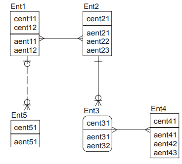

Considere o diagrama de entidades e relacionamentos a seguir, onde as chaves primárias de cada entidade se encontram na parte superior dos retângulos. As entidades fortes são representadas por retângulos e as entidades fracas são representadas por retângulos com cantos arredondados.
O diagrama atende as seguintes restrições:
(i) entre Ent1 e Ent2, tem-se um relacionamento muitos para muitos;
(ii) entre as Entidades Ent2 e Ent3, tem-se um relacionamento de um para nenhum, um ou muitos;
(iii) entre Ent1 e Ent5, tem-se um relacionamento de zero ou um para zero, um ou muitos; e
(iv) entre Ent3 e Ent4, tem-se um relacionamento de muitos para muitos.
FONTE: Provas e Gabaritos Enade
Aplicando a terceira forma normal ao modelo, qual será o total de colunas que deve ser criado para representar as chaves estrangeiras?